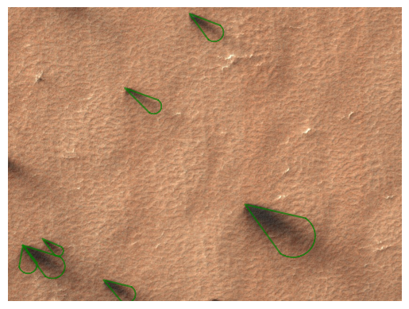

import numpy as np
import pandas as pd
from p4tools.io import (
get_blotch_catalog,
get_blotches_for_tile,
get_fan_catalog,
get_fans_for_tile,
get_region_names,
)Examples
Some examples on working with p4tools
rois = get_region_names()rois.roi_name.unique()array(['Macclesfield', 'unknown', 'Starburst', 'Manhattan_Classic',
'Wellington', 'Albany', 'Bilbao', 'Ithaca', 'Portsmouth', 'Pisaq',
'Manhattan_Frontinella', 'BuenosAires', 'Inca_City_Ridges',
'Inca_City', 'Giza', 'Potsdam', 'Troy', 'Oswego_Edge', 'Halifax',
'Caterpillar', 'Rochester', 'Manhattan_Cracks', 'Schenectady',
'Binghamton', 'Atka', 'Cortland', 'Geneseo', 'Manhattan2'],
dtype=object)rois.query("roi_name=='Giza'").describe()| lat_IND | lon_IND | minimal_distance | lat_WORD | lon_WORD | MY | |
|---|---|---|---|---|---|---|
| count | 35.000000 | 35.000000 | 35.000000 | 3.500000e+01 | 3.500000e+01 | 35.000000 |
| mean | -84.829069 | 66.071666 | 6.318094 | -8.482000e+01 | 6.570000e+01 | 29.057143 |
| std | 0.066423 | 0.991527 | 11.242504 | 2.883665e-14 | 1.441832e-14 | 1.027357 |
| min | -84.979100 | 65.637800 | 0.720371 | -8.482000e+01 | 6.570000e+01 | 28.000000 |
| 25% | -84.834950 | 65.736450 | 1.254355 | -8.482000e+01 | 6.570000e+01 | 28.000000 |
| 50% | -84.812200 | 65.774200 | 1.487853 | -8.482000e+01 | 6.570000e+01 | 29.000000 |
| 75% | -84.809350 | 65.799750 | 4.005964 | -8.482000e+01 | 6.570000e+01 | 30.000000 |
| max | -84.581900 | 69.890400 | 44.631912 | -8.482000e+01 | 6.570000e+01 | 31.000000 |
fans = get_fan_catalog()
blotches = get_blotch_catalog()fansperobsid = fans.groupby("obsid").size()fansperobsid.head()obsid
ESP_011296_0975 4472
ESP_011341_0980 455
ESP_011348_0950 4
ESP_011350_0945 1107
ESP_011351_0945 1636
dtype: int64blotchesperobsid = blotches.groupby("obsid").size()
blotchesperobsid.head()obsid
ESP_011296_0975 1014
ESP_011341_0980 283
ESP_011348_0950 195
ESP_011350_0945 625
ESP_011351_0945 1167
dtype: int64df = fansperobsid.to_frame()df["blotches counts"] = blotchesperobsiddf.columns = ["fan_count_per_obsid", "blotch_count_per_obsid"]
df.head()| fan_count_per_obsid | blotch_count_per_obsid | |
|---|---|---|
| obsid | ||
| ESP_011296_0975 | 4472 | 1014 |
| ESP_011341_0980 | 455 | 283 |
| ESP_011348_0950 | 4 | 195 |
| ESP_011350_0945 | 1107 | 625 |
| ESP_011351_0945 | 1636 | 1167 |
fan_counts_per_tile = fans.groupby("tile_id").size()
fan_counts_per_tile.head()tile_id
APF0000001 3
APF0000006 4
APF0000009 1
APF000000b 1
APF000000c 4
dtype: int64blotch_counts_per_tile = blotches.groupby("tile_id").size()
blotch_counts_per_tile.head()tile_id
APF0000001 1
APF0000002 2
APF0000004 4
APF0000005 5
APF0000006 7
dtype: int64fan_counts_per_tile.name = "fans"blotch_counts_per_tile.name = "blotches"df = pd.DataFrame(fan_counts_per_tile)df["blotches"] = blotch_counts_per_tile
df.head()| fans | blotches | |
|---|---|---|
| tile_id | ||
| APF0000001 | 3 | 1.0 |
| APF0000006 | 4 | 7.0 |
| APF0000009 | 1 | 26.0 |
| APF000000b | 1 | 3.0 |
| APF000000c | 4 | 3.0 |
df[(df.fans + df.blotches) > 100].head()| fans | blotches | |
|---|---|---|
| tile_id | ||
| APF00002zj | 99 | 4.0 |
| APF00006mg | 98 | 7.0 |
| APF00006mt | 118 | 2.0 |
| APF00006mv | 95 | 19.0 |
| APF00006n0 | 43 | 58.0 |
The input data products for the P4 project are the `COLOR products one can find on the uahirise.org website!
buffalo = "ESP_011486_0980_COLOR ESP_011987_0975_COLOR ESP_012198_0975_COLOR ESP_012277_0975_COLOR ESP_012620_0975_COLOR".split()buffalo = [i.rstrip("_COLOR") for i in buffalo]p4_buffalo = fans[fans.obsid.isin(buffalo)].obsid.unique()fans[fans.obsid.isin(p4_buffalo)].groupby("obsid").size()obsid
ESP_011486_0980 242
ESP_012277_0975 19
ESP_012620_0975 30
dtype: int64fans[fans.obsid.isin(p4_buffalo)][["l_s", "obsid"]].drop_duplicates()| l_s | obsid | |
|---|---|---|
| 124564 | 241.144 | ESP_012620_0975 |
| 136301 | 187.254 | ESP_011486_0980 |
| 139964 | 224.333 | ESP_012277_0975 |
fans[fans.tile_id.str.contains("r8y")]| marking_id | angle | distance | tile_id | image_x | image_y | n_votes | obsid | spread | version | ... | y_angle | l_s | map_scale | north_azimuth | BodyFixedCoordinateX | BodyFixedCoordinateY | BodyFixedCoordinateZ | PlanetocentricLatitude | PlanetographicLatitude | Longitude | |
|---|---|---|---|---|---|---|---|---|---|---|---|---|---|---|---|---|---|---|---|---|---|
| 154795 | F02a9f2 | 34.16 | 171.27 | APF0000r8y | 505.45 | 13038.68 | 19 | ESP_020242_0945 | 41.85 | 1 | ... | 0.56 | 184.557 | 1.0 | 143.674895 | -63.560715 | 265.134952 | -3370.241784 | -85.374934 | -85.428989 | 103.481087 |
| 154796 | F02a9f3 | 38.19 | 86.92 | APF0000r8y | 387.19 | 12617.75 | 16 | ESP_020242_0945 | 33.44 | 1 | ... | 0.62 | 184.557 | 1.0 | 143.674895 | -63.930749 | 264.887663 | -3370.271982 | -85.377575 | -85.431599 | 103.568870 |
| 154797 | F02a9f4 | 36.11 | 106.09 | APF0000r8y | 30.86 | 13128.72 | 18 | ESP_020242_0945 | 36.90 | 1 | ... | 0.59 | 184.557 | 1.0 | 143.674895 | -63.883825 | 265.528290 | -3370.208031 | -85.367154 | -85.421299 | 103.527769 |
| 154798 | F02a9f5 | 76.52 | 63.91 | APF0000r8y | 32.33 | 13128.33 | 3 | ESP_020242_0945 | 46.96 | 1 | ... | 0.96 | 184.557 | 1.0 | 143.674895 | -63.882893 | 265.526982 | -3370.208168 | -85.367179 | -85.421324 | 103.527643 |
| 154799 | F02a9f6 | 33.30 | 90.38 | APF0000r8y | 249.21 | 12781.71 | 14 | ESP_020242_0945 | 25.57 | 1 | ... | 0.55 | 184.557 | 1.0 | 143.674895 | -63.935125 | 265.109183 | -3370.249450 | -85.373890 | -85.427956 | 103.558845 |
| 154800 | F02a9f7 | 32.72 | 77.35 | APF0000r8y | 204.00 | 13205.53 | 15 | ESP_020242_0945 | 36.85 | 1 | ... | 0.54 | 184.557 | 1.0 | 143.674895 | -63.694249 | 265.469837 | -3370.212149 | -85.368868 | -85.422993 | 103.491955 |
| 154801 | F02a9f8 | 39.19 | 54.32 | APF0000r8y | 73.62 | 13114.42 | 12 | ESP_020242_0945 | 30.04 | 1 | ... | 0.63 | 184.557 | 1.0 | 143.674895 | -63.858677 | 265.487992 | -3370.211967 | -85.367920 | -85.422056 | 103.524616 |
7 rows × 24 columns
from p4tools.plotting import plot_blotches_for_tile, plot_fans_for_tileplot_fans_for_tile("r8y")
get_blotches_for_tile("r8y") # no blotches, that's why below plot is empty| marking_id | angle | tile_id | image_x | image_y | n_votes | obsid | radius_1 | radius_2 | vote_ratio | ... | y_angle | l_s | map_scale | north_azimuth | BodyFixedCoordinateX | BodyFixedCoordinateY | BodyFixedCoordinateZ | PlanetocentricLatitude | PlanetographicLatitude | Longitude |
|---|
0 rows × 23 columns
plot_blotches_for_tile("APF0000r8y")Warning: No blotches found.
get_fans_for_tile("APF0000r8y")| marking_id | angle | distance | tile_id | image_x | image_y | n_votes | obsid | spread | version | ... | y_angle | l_s | map_scale | north_azimuth | BodyFixedCoordinateX | BodyFixedCoordinateY | BodyFixedCoordinateZ | PlanetocentricLatitude | PlanetographicLatitude | Longitude | |
|---|---|---|---|---|---|---|---|---|---|---|---|---|---|---|---|---|---|---|---|---|---|
| 154795 | F02a9f2 | 34.16 | 171.27 | APF0000r8y | 505.45 | 13038.68 | 19 | ESP_020242_0945 | 41.85 | 1 | ... | 0.56 | 184.557 | 1.0 | 143.674895 | -63.560715 | 265.134952 | -3370.241784 | -85.374934 | -85.428989 | 103.481087 |
| 154796 | F02a9f3 | 38.19 | 86.92 | APF0000r8y | 387.19 | 12617.75 | 16 | ESP_020242_0945 | 33.44 | 1 | ... | 0.62 | 184.557 | 1.0 | 143.674895 | -63.930749 | 264.887663 | -3370.271982 | -85.377575 | -85.431599 | 103.568870 |
| 154797 | F02a9f4 | 36.11 | 106.09 | APF0000r8y | 30.86 | 13128.72 | 18 | ESP_020242_0945 | 36.90 | 1 | ... | 0.59 | 184.557 | 1.0 | 143.674895 | -63.883825 | 265.528290 | -3370.208031 | -85.367154 | -85.421299 | 103.527769 |
| 154798 | F02a9f5 | 76.52 | 63.91 | APF0000r8y | 32.33 | 13128.33 | 3 | ESP_020242_0945 | 46.96 | 1 | ... | 0.96 | 184.557 | 1.0 | 143.674895 | -63.882893 | 265.526982 | -3370.208168 | -85.367179 | -85.421324 | 103.527643 |
| 154799 | F02a9f6 | 33.30 | 90.38 | APF0000r8y | 249.21 | 12781.71 | 14 | ESP_020242_0945 | 25.57 | 1 | ... | 0.55 | 184.557 | 1.0 | 143.674895 | -63.935125 | 265.109183 | -3370.249450 | -85.373890 | -85.427956 | 103.558845 |
| 154800 | F02a9f7 | 32.72 | 77.35 | APF0000r8y | 204.00 | 13205.53 | 15 | ESP_020242_0945 | 36.85 | 1 | ... | 0.54 | 184.557 | 1.0 | 143.674895 | -63.694249 | 265.469837 | -3370.212149 | -85.368868 | -85.422993 | 103.491955 |
| 154801 | F02a9f8 | 39.19 | 54.32 | APF0000r8y | 73.62 | 13114.42 | 12 | ESP_020242_0945 | 30.04 | 1 | ... | 0.63 | 184.557 | 1.0 | 143.674895 | -63.858677 | 265.487992 | -3370.211967 | -85.367920 | -85.422056 | 103.524616 |
7 rows × 24 columns
get_blotches_for_tile("5g")| marking_id | angle | tile_id | image_x | image_y | n_votes | obsid | radius_1 | radius_2 | vote_ratio | ... | y_angle | l_s | map_scale | north_azimuth | BodyFixedCoordinateX | BodyFixedCoordinateY | BodyFixedCoordinateZ | PlanetocentricLatitude | PlanetographicLatitude | Longitude | |
|---|---|---|---|---|---|---|---|---|---|---|---|---|---|---|---|---|---|---|---|---|---|
| 176515 | B0319e4 | 37.52 | APF000005g | 542.44 | 26364.59 | 56 | ESP_012254_1065 | 19.55 | 15.01 | 1.00 | ... | 0.57 | 223.218 | 0.25 | 100.857869 | 900.726050 | -336.053862 | -3241.541739 | -73.480739 | -73.664238 | 339.539847 |
| 176516 | B0319e5 | 38.16 | APF000005g | 462.73 | 26382.80 | 51 | ESP_012254_1065 | 21.88 | 15.47 | 0.84 | ... | 0.58 | 223.218 | 0.25 | 100.857869 | 900.739915 | -336.038989 | -3241.539335 | -73.480601 | -73.664101 | 339.540967 |
| 176517 | B0319e6 | 38.65 | APF000005g | 407.45 | 26519.19 | 58 | ESP_012254_1065 | 22.04 | 16.82 | 1.00 | ... | 0.60 | 223.218 | 0.25 | 100.857869 | 900.774887 | -336.044180 | -3241.529264 | -73.479991 | -73.663497 | 339.541405 |
| 176518 | B0319e7 | 21.95 | APF000005g | 755.74 | 26755.94 | 53 | ESP_012254_1065 | 15.90 | 12.94 | 1.00 | ... | 0.39 | 223.218 | 0.25 | 100.857869 | 900.779119 | -336.148800 | -3241.518294 | -73.479279 | -73.662792 | 339.535652 |
| 176519 | B0319e8 | 15.11 | APF000005g | 424.85 | 26942.25 | 35 | ESP_012254_1065 | 14.20 | 11.73 | 1.00 | ... | 0.31 | 223.218 | 0.25 | 100.857869 | 900.859355 | -336.100928 | -3241.500795 | -73.478246 | -73.661769 | 339.539996 |
| 176520 | B0319e9 | 40.97 | APF000005g | 134.64 | 26914.32 | 52 | ESP_012254_1065 | 22.44 | 15.85 | 1.00 | ... | 0.61 | 223.218 | 0.25 | 100.857869 | 900.890531 | -336.034981 | -3241.498434 | -73.478134 | -73.661658 | 339.544328 |
| 176521 | B0319ea | 4.13 | APF000005g | 313.37 | 26945.62 | 26 | ESP_012254_1065 | 14.23 | 12.12 | 1.00 | ... | 0.23 | 223.218 | 0.25 | 100.857869 | 900.874218 | -336.077360 | -3241.498931 | -73.478144 | -73.661668 | 339.541622 |
7 rows × 23 columns